- / -
EMSC3025/6025: Remote Sensing of Water Resources
Dr. Sia Ghelichkhan
- / -
Water Cycle
EMSC3025/6025
Dr. Sia Ghelichkhan
Objectives of this Lecture
By the end of this lecture, you should be able to:
- Describe the structure and properties of water relevant to hydrology
- Understand the concept and components of the hydrological cycle
- Explain the global distribution of water and its limited availability
- Define the water balance equation and interpret each term
- Be able to recognise a surface catchment
- Identify challenges in applying hydrological concepts at different scales
This lecture forms the foundation for all subsequent modules in the course.
What is hydrology?
- Hydrology comes from Greek hydor (water) and Latin logia (study).
- Despite the name, it focuses on fresh water, not all water.
- Oceanography is the science of saline water.
- Hydrology examines:
- Distribution and movement of water
- Interactions with land, atmosphere, and ecosystems
The oldest known description of water cycle:
[...] precipitation falling in the mountains infiltrated the Earth’s surface and led to streams and springs in the lowlands. [...]
Vitruvius, Roman Architect, 1st century BC
Humans and water
The human–water interactions are central to sustainable water management. Abbot et al. Nature 2019
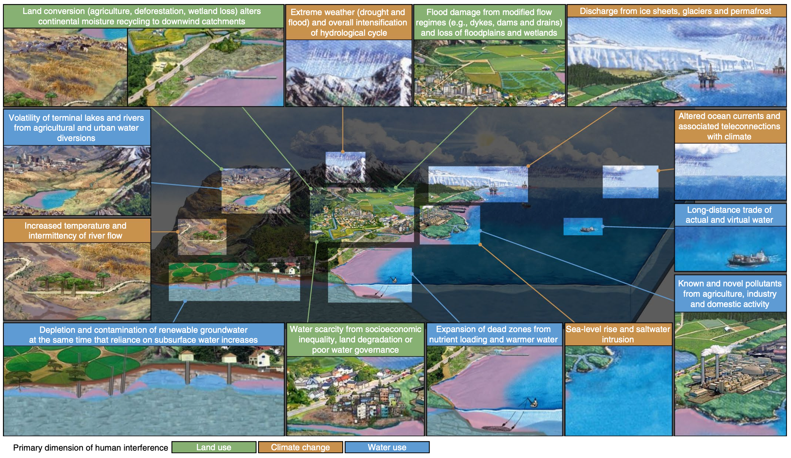
Hydrology as a science
“The total quantity of fresh water on earth could satisfy all the needs of the human population if it were evenly distributed and accessible.” — Stumm (1986)
- Hydrology explains uneven water distribution
- Serves as:
- A pure science – understanding natural processes
- An applied science – solving water challenges
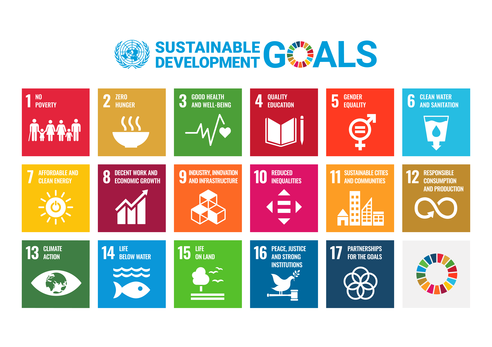
Disciplinary pathways
- Two main traditions:
- Engineering hydrology – design-focused, quantitative
- Earth science hydrology – process-focused, explanatory
- This course adopts a quantitative Earth science perspective
- Related fields:
- Geohydrology – groundwater systems
- Ecohydrology – water–ecosystem interactions
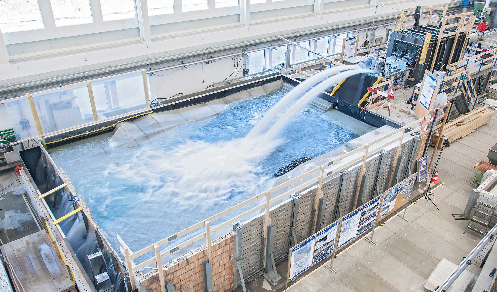
A resource and more
- Covers more than 70% of Earth’s surface
- Essential to:
- Human survival
- Agricultural production
- Ecological functioning
- For Indigenous Australians, water is integral to Country, ceremony, and responsibility
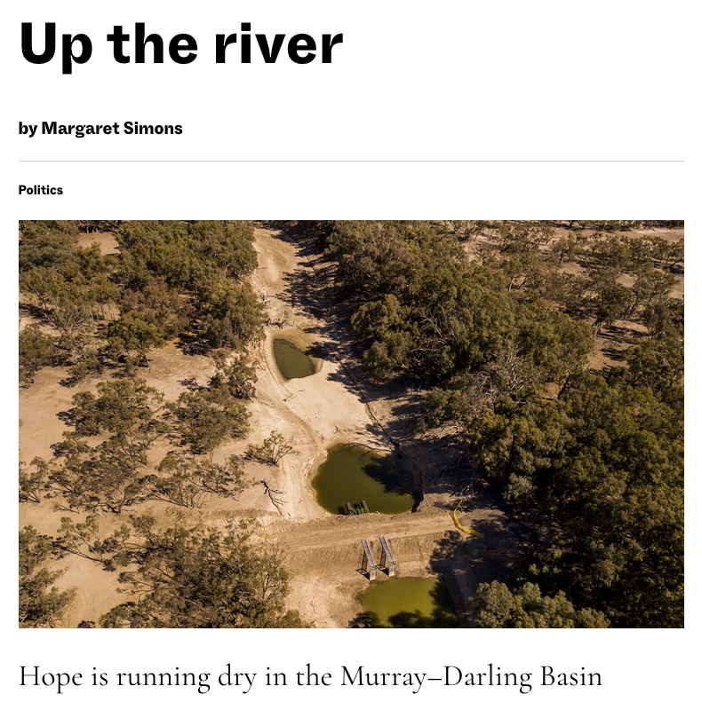
Physical properties of water
Molecular properties of water
Water:
H_2O two hydrogen atoms covalently bonded to oxygenIt is a bipolar molecule:
- Positive hydrogen, negative oxygen
Bonds:
- Covalent within molecules
- Hydrogen between molecules
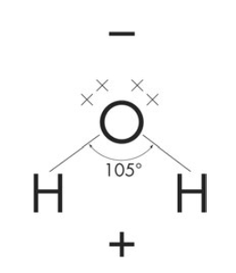
- Leads to:
- High surface tension
- Strong cohesion
- Exceptional solvent capability
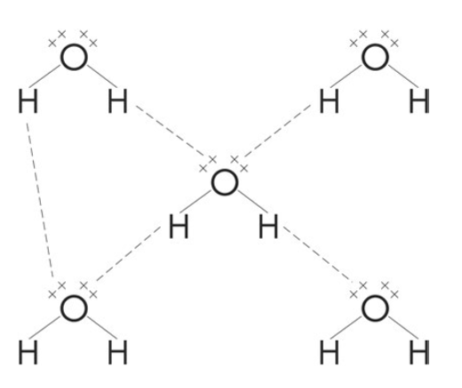
Physical Properties
Density
- Water is most dense at 4°C
- Ice is less dense → floats on water
- Implications: - Lakes freeze from top-down - Aquatic ecosystems persist in cold conditions
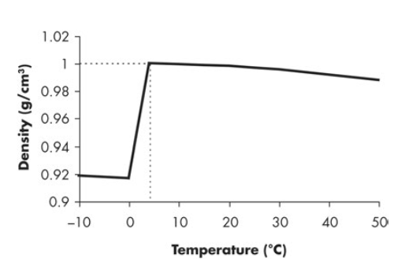
Specific Heat
- Water has high specific heat capacity (4.2 kJ/kg/K)
- Slows temperature change
- Buffers climate and daily temperature swings
- Comparison with other materials:
| Substance | Specific Heat (kJ/kg/K) |
|---|---|
| Water | 4.2 |
| Dry soil | 1.1 |
| Ethanol | 0.7 |
| Iron | 0.44 |
Phase transitions
- The high energy required to break hydrogen bonds makes water an ideal climate stabiliser.
- Water changes state:
- Solid ↔ Liquid ↔ Gas
- Processes include:
- Melting, freezing
- Evaporation, condensation
- Sublimation, deposition
- Involves latent heat
- Crucial for energy transfer in climate systems
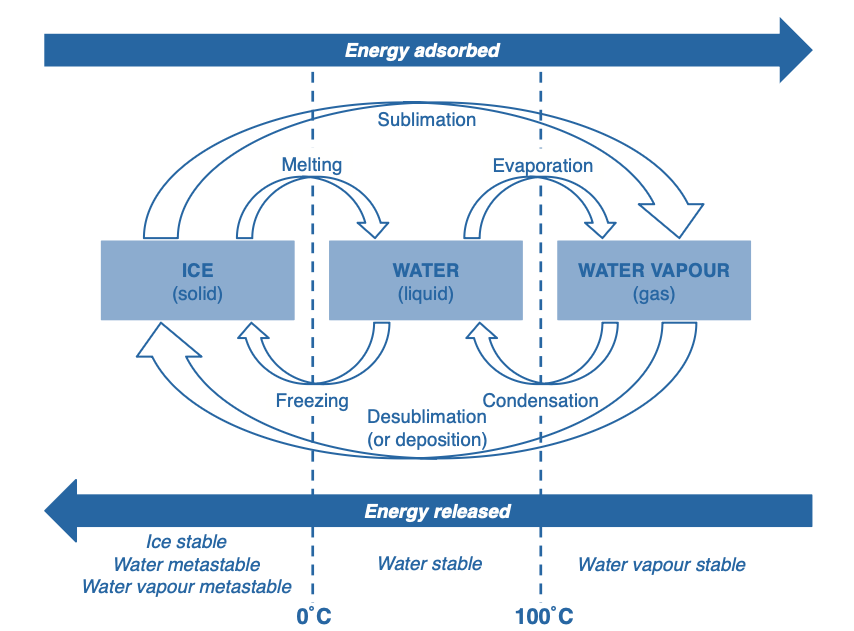
Let’s switch from micro to macro! Where do we look?
A spatial unit to study the water cycle?
A catchment?
- A catchment is a land area where surface water drains to a common point
- Defined by topographic divides
- Used to define hydrological boundaries
- Contains nested sub-catchments
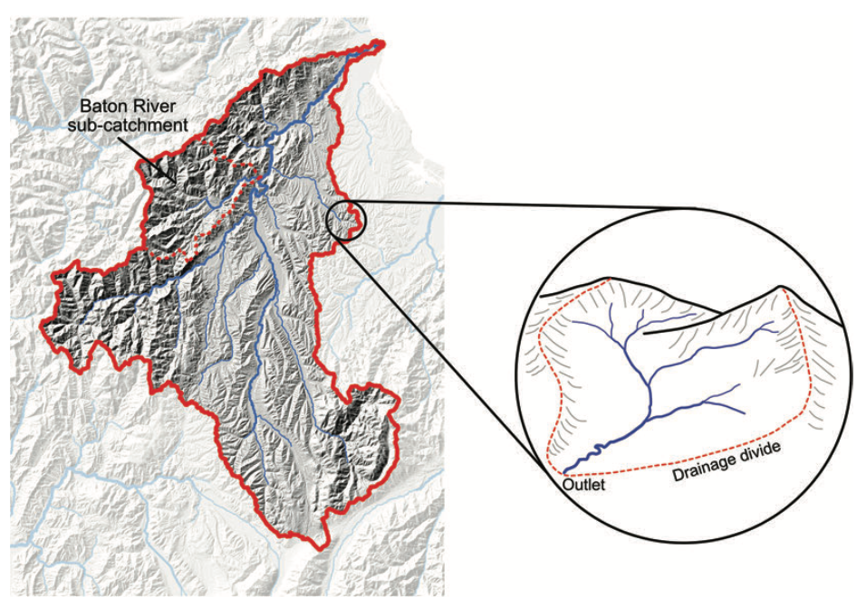
Groundwater vs surface catchments
- Surface water divides ≠ groundwater divides
- Groundwater can flow across topographic boundaries
- Important for:
- Integrated water resource management
- Understanding flow connectivity
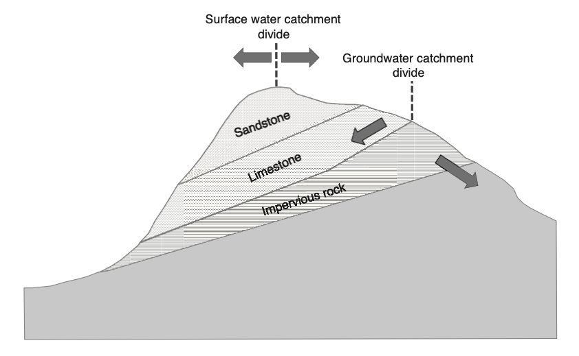
How to identify a catchment?
Get a topographic map
- A contour map with visible elevation lines.
- Mark known streams (especially the outlet point).
Identify the outlet (pour point)
- The point you want to delineate the catchment (where stream exits).
Mark all flow lines (ridges to valleys) - Draw approximate flow paths down the steepest slope.
Trace ridgelines (water divides)
- Trace along high points (ridges) that separate your catchment from neighbouring ones.
- Follow the highest elevation between two drainage areas.
- Cross contour lines at right angles (steepest ascent).
- Close the boundary loop at the other side of the outlet.
Check connectivity
- Ensure all water within your boundary flows to the outlet.
- Everything outside drains elsewhere.
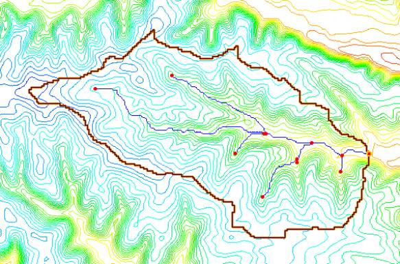
The hydrological cycle
- The hydrological cycle describes water movement between Earth and atmosphere as gas, liquid, or solid.
- It is a conceptual model — useful but simplified.
- Hydrology begins with the global scale, then zooms into catchments.
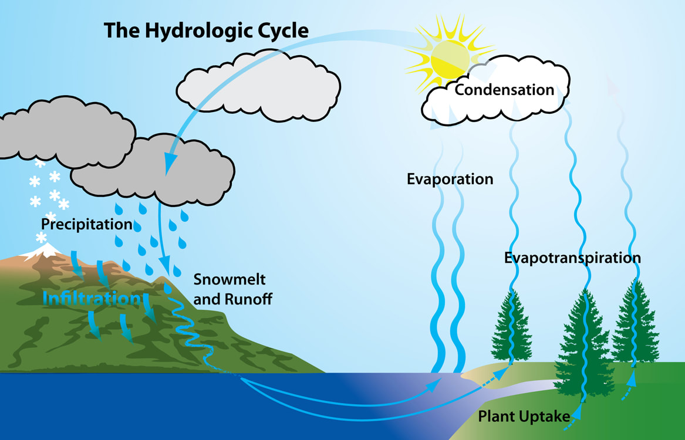
Global distribution of water
- Most of Earth’s water is stored in:
- Oceans/seas: 96.5%
- Ice/glaciers: 1.74%
- Groundwater: 1.69%
- Rivers and lakes make up tiny fractions of total volume.
groundwater with the 1st km of the surface, and discount ice and snow ⇒ we have 0.27% of which is accessible.
Q: Is this enough water per person?
| Storage | Volume (×10³ km³) | % of total |
|---|---|---|
| Oceans/seas | 1,338,000 | 96.54 |
| Ice caps/glaciers | 24,064 | 1.74 |
| Groundwater | 23,400 | 1.69 |
| Permafrost | 300 | 0.022 |
| Lakes | 176 | 0.013 |
| Soil | 16.5 | 0.001 |
| Atmosphere | 12.9 | 0.0009 |
| Marsh/wetlands | 11.5 | 0.0008 |
| Rivers | 2.12 | 0.00015 |
| Biota | 1.12 | 0.00008 |
Components of the global cycle
- Key global processes:
- Evaporation from oceans/lakes
- Precipitation over land and sea
- Run-off moves water back to oceans
- Oceans evaporate more than they receive.
- Continents receive more precipitation than they lose.
- Ironically the terrestial component of the cycle is by far the smallest.
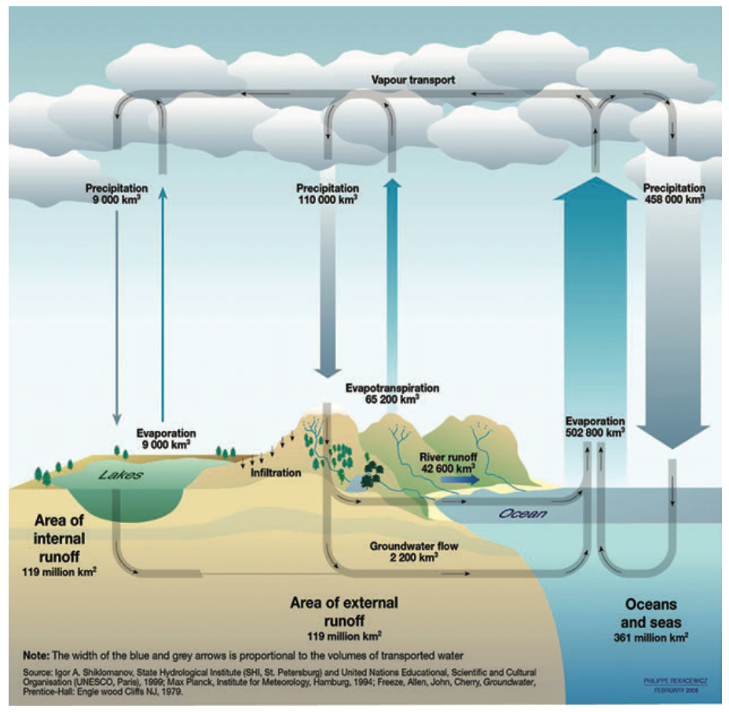
Climate zones and water partitioning
- Precipitation is partitioned into:
- Evaporation
- Run-off
- Groundwater recharge
- Distribution varies by climate:
- Humid temperate: balanced
- Arid zones: dominated by evaporation
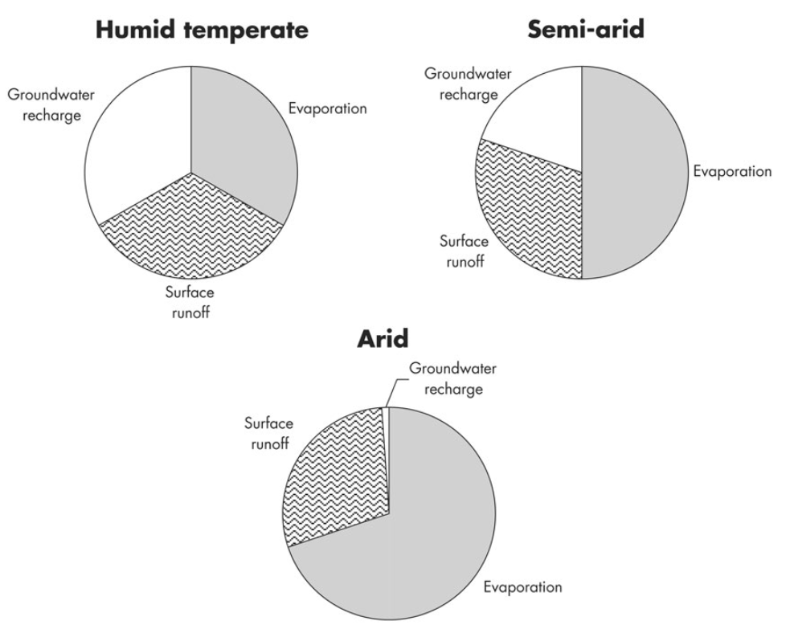
Water availability vs population
146 million litres per person per year is misleading!!!
- Per capita water availability is misleading if population and use patterns are ignored.
- Example: Australia is water-rich by volume but highly variable in space and time.
- Effective management depends on abstraction, storage, and equity.
| Richest countries | 1,000 m³/yr | Poorest countries | 1,000 m³/yr |
|---|---|---|---|
| Iceland | 525 | Kuwait | 0 |
| Guyana | 301 | Bahrain | 0.003 |
| Suriname | 184 | UAE | 0.016 |
| PNG | 109 | Egypt | 0.022 |
| Bhutan | 103 | Qatar | 0.026 |
| Gabon | 98 | Bahamas | 0.053 |
| Canada | 81 | Sudan | 0.081 |
| Other Countries | |||
| Australia | 21 | South Africa | 0.843 |
| USA | 8 | Kenya | 0.467 |
| USA | 2 | Israel | 0.093 |
Water abstraction
- OECD countries vary widely in water abstraction.
- USA: ~1,730 m³/person/year
- Often driven by:
- Agriculture
- Industry
- Irrigation infrastructure
- Water use ≠ water availability
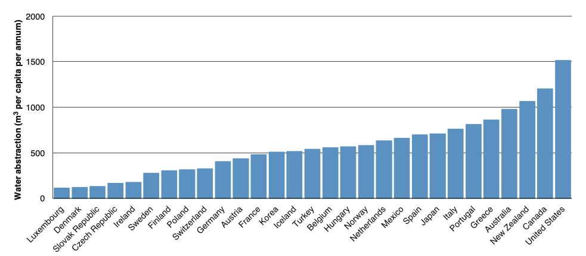
Groundwater Embedded in Global Food Trade
approximately eleven per cent of non-renewable groundwater use for irrigation is embedded in international food trade, of which two-thirds are exported by Pakistan, the USA and India alone.
Dalin et al (2017), Nature
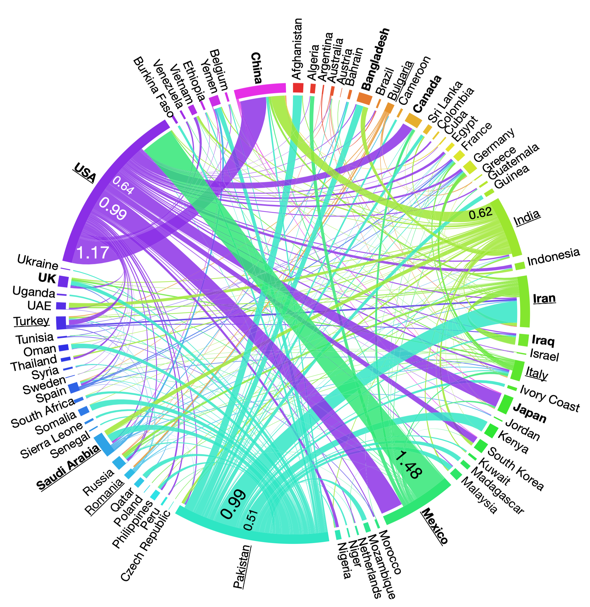
The consequence
The consequence
Link to Youtube: WSJ report on groundwater depletion in Kansas.
The catchment hydrological cycle
- Focuses on processes at basin scale:
- Evaporation
- Precipitation
- Run-off
- Includes sub-processes:
- Interception
- Transpiration
- Infiltration and through-flow
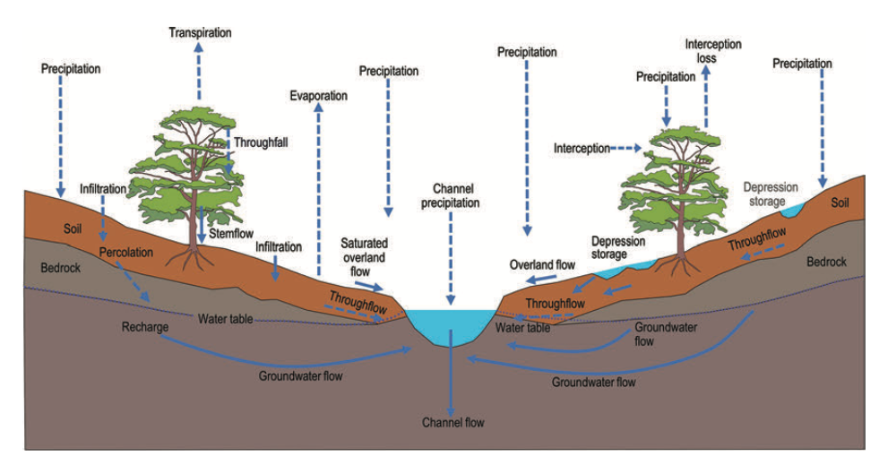
The water balance equation
- The water balance equation represents the continuity of water mass in a system.
- It quantifies water input, output, and storage over time.
- Often rearranged to estimate streamflow (Q)
Q = P - E - \Delta S
Where:
P : PrecipitationE : Evaporation\Delta S : Change in storageQ : Run-off (or river discharge)
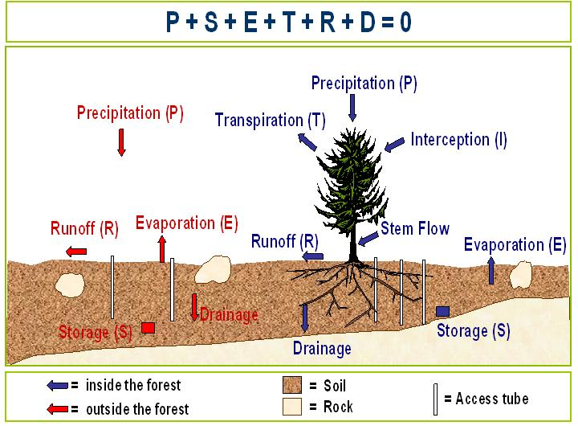
Understanding the terms
- The equation includes both fluxes and stores:
- Fluxes:
P ,E ,Q - Store:
\Delta S (soil, groundwater, snow)
- Fluxes:
- Each term may be:
- Positive (gain) — e.g. precipitation
- Negative (loss) — e.g. evaporation or outflow
- Storage can increase or decrease depending on the balance.
- Used widely in:
- Catchment hydrology
- Water resource models
- Climate impact studies
- Knowing three of the four terms allows you to estimate the fourth.
- Example:
If
P = 100 ,E = 40 ,\Delta S = 10 , thenQ = 100 - 40 - 10 = 50
Challenges in practice
- Difficulties in application include:
- Spatial variability in rainfall
- Temporal mismatch in data resolution
- Estimating
\Delta S is often hard
- Hydrological models often use the water balance to simulate run-off.
- Model example:
Input daily rainfall and evaporation to calculate daily discharge using:
Q = P - E - \Delta S
Magnitude–frequency–duration
Hydrological events vary by:
- Magnitude (e.g. rainfall depth)
- Frequency (how often)
- Duration (how long)
Frequency histograms help visualize event rarity
Important for flood design and infrastructure planning
Probability:
p = \frac{n}{N} Recurrence interval = ( 1/p )
A 1% chance event = 1-in-100-year event
Recurrence ≠ prediction of exact timing
Used for rainfall design curves and flood risk estimation
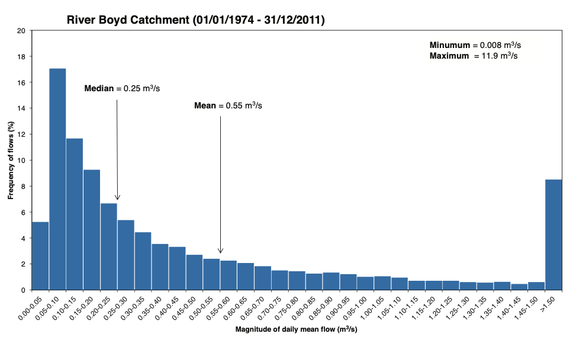
Duration and design rainfall
- Magnitude–frequency–duration (MFD) curves relate:
- Rainfall depth
- Storm duration
- Event rarity
- Longer durations require more rainfall to be “rare”
- Used to develop intensity–duration–frequency (IDF) charts
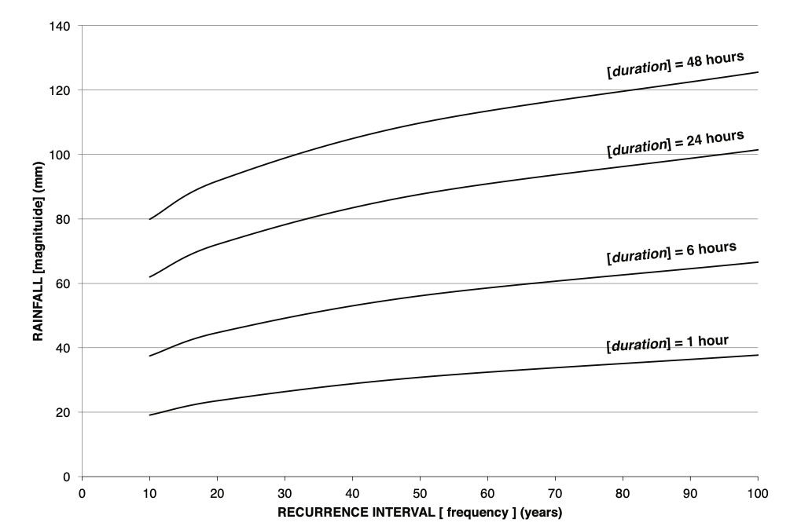
Summary
In this lecture, we covered:
- The definition and scope of hydrology as a science of fresh water
- The physical and molecular properties of water that influence climate and flow
- The structure and function of the hydrological cycle, from global to catchment scale
- Key concepts such as catchments, water availability, and flux vs storage
- The water balance equation as a tool for understanding and modelling water movement
- Challenges in quantifying water fluxes and interpreting hydrological variability